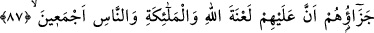

HAKKA GİDEN YOL
86. Îmân etmelerinden, Rasûl’ün hak olduğuna şehâdet getirmelerinden ve
kendilerine apaçık deliller gelmesinden sonra inkârcılığa sapan bir kavme Allah
nasıl hidâyet nasip eder? Allah zâlimler topluluğunu doğru yola iletmez.
87. İşte onların cezası, Allah’ın, meleklerin ve bütün insanlığın lânetine
uğramalarıdır.
88. Bu lânete ebedî gömülüp gidecekler. Onların azapları hafifletilmez; yüzlerine
de bakılmaz.
89. Ancak, bundan sonra tevbe edip yola gelenler başka. Çünkü Allah çok
bağışlayıcı ve merhametlidir.
Allah, îman ettikten sonra inkâr eden bir topluma hakka giden yolu nasıl gösterir?
Deniliyor ki bu âyette kastedilenler; îman ettikten sonra irtidat ederek Medîne’den kaçıp
Mekke’ye yerleşen onlu çetedir. Bu ifade, Allah Teâlâ’nın, hakka karşı inatçılık eden ve
ona karşı büyüklük taslayıp boyun eğmeyen bir kavimde hidâyete erme temâyülü
yaratarak o kavmi hidâyete muvaffak kılmasının, uzak olduğunu gösterir.
Allah Teâlâ, bu kişilerde, ancak hakka karşı mütevâzî olduklarında, boyun
eğdiklerinde ve hakka rağbet ettiklerinde, hidâyete erme temâyülü yaratır. Bu temâyülü
kazanmaya muvaffak kılar ve onlara bu konuda güç verir.
Böylece, buradaki hidâyetten maksat, hidâyete erme gücünü yaratmak olmaktadır.
Allah Teâlâ’nın bu teklîf dünyâsındaki âdeti; kulun elde etmeyi kasdettiği bir fiili, bu
kasdın hemen akabinde yaratmak tarzında cereyân etmektedir. Bu âyette sanki şöyle
buyurmuş oluyor: Bunlar, küfrü elde etmeyi kasdedip kâfir olmak istediği halde, Allah
bunlarda hidâyete erme ve mârifet temâyüllerini nasıl yaratır?
“Rasûl’ün hak olduğunu” yani söylediği her şeyde doğru olduğunu gördükten ve
“kendilerine açık deliller -ki bu deliller, Hz. Peygamber (s.a.)’in doğruluğunu
gösteren Kur’ân âyetleridir- geldikten sonra inkâr eden bir toplumu Allah nasıl
hidâyete iletir?”
Burada dil ile ikrârın, îmanın hakikatine dâhil olmadığına delil vardır.